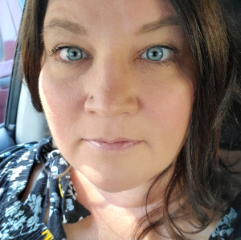
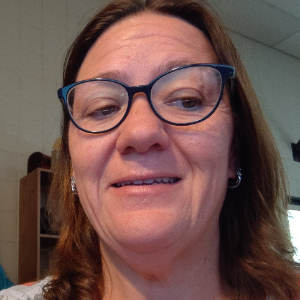
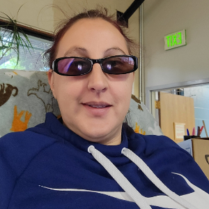
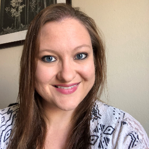

Our mission is to guide your clinic to optimized income.
PRS Managed Services is a revenue cycle management (RCM) company. Our seasoned and experienced staff can handle everything a busy clinic needs, from reporting, compliance, education, EMR navigation, and AR management to clinic workflow and beyond.
PRS Managed Services is truly a one stop shop.
Please visit PRSNetwork.com to see our full constellation of healthcare services!
Our Vision is to help medical groups optimize pre-billing processes.
Follow the PRS Way and our Best Practices:
PRS Managed Services has decades of medical billing and workflow experience for our clients to leverage. We invite you to be a part of our medical ecosystem of success.
The PRS team has remained stable and cohesive for well over a decade, and we are thrilled to share with you a glimpse into our exceptional group. Our team is the embodiment of longevity, dedication, and unwavering commitment to our shared mission: guiding YOUR clinic to maximized income.
For over ten years and counting, we have formed a formidable bond, almost like a family. Our unity is rooted in trust and respect, nurtured through countless triumphs and challenges. This stability has allowed us to evolve and adapt to the ever-changing landscape of your industry with ease and confidence.
One of the most remarkable aspects of our team is our collective expertise. Over the years, we've honed our skills and specialized knowledge to an unprecedented level. Each team member has become an expert in their respective roles, and we seamlessly complement each other's strengths, making us a well-oiled machine.
Our team's stability has fostered an environment of open communication and camaraderie. We understand each other's strengths, weaknesses, and idiosyncrasies, and we respect and appreciate the unique qualities that each member brings to the table. This harmonious atmosphere translates into effective collaboration, innovation, and creativity.
Our consistent track record of success over the years reflects our shared commitment to our vision and values. We've built a reputation for delivering high-quality work, meeting deadlines, and exceeding expectations. This reputation has earned us the trust and respect of our clients and partners, further strengthening our position in medical billing market.
The tenure of our team members is a testament to our nurturing environment. We prioritize professional development and personal well-being, offering opportunities for growth, training, and work-life balance. This approach has contributed to our team's longevity and ensured that we have a strong, experienced, and dedicated workforce.
Our stable team is a testament to the power of consistency, camaraderie, and shared goals. We look forward to many more years of success, growth, and collaboration as we continue to conquer new challenges and set the standard for excellence in our industry with one over-riding goal: guide YOUR clinic to maximized income.
Mark Painter, MBSU, CPMA, CEO is one of the foremost authorities on Medical Billing, Coding, and RVUs in the country. The ins and outs of Medical documentation and coding is in his DNA: his father, Dr. Ray Painter, is a urologist and together they developed the nation's first RVU schedule in the 1960s; Coding Today, a software application they developed, is the best coding software for physicians on the US market. Mark travels the country giving lectures, conducting seminars, consulting with groups both large and small: he is a remarkable one-of-a-kind resource for our clients and the national medical community at large.

Marianne DeSciose, Director of Operations has been with PRS for 15 years. Marianne has presided over the growth and development of the company during that time, acquiring unequalled expertise in Practice Management systems, workflow, and medical claim wizardry. From large clinics (100 or more physicians) to small, her dedication to each clinic's success is remarkable: it is not uncommon that Marianne and her team will raise client income by over 30% within 9 months of onboarding.

Martina Juszynski, Office Manager has been with PRS for 5 years. Martina's attention to detail, her responsiveness and care of both customers and office staff are unequalled, and like all PRS Officers her medical billing knowledge base is extensive.

Tiffany Ventura, Billing Team Lead has been with PRS for 10 years. Tiffany is an expert in resolving claims issues: she is an absolute master at adjucating denied claims!

Rockelle Sour, Billing Team Lead has been with PRS for 6 years. Rockelle, in addition to billing and expertise is great at coding and reporting. KPI analytics is one of the great joys of her day!
Monique Risley, Team Lead has been with PRS for 7 years. Monique, in addition to a great sense of humor, does whatever it takes to finish the task: no challenge is left undone.
Becca Farrel, Team Lead has been with PRS for 4 years.

Gina Patterson - Coding Lead has been with PRS for 4 yearsand has proven to be an absolute wizard at coding, which is as much an art as a science.
Amanda Cwik, Posting Team Lead-Team Lead has been with PRS for 5 years. Watching Amanda post is like watching a magic show: she's unbelievably fast and yet, while speeding along, she notes account anomalies and brings them to the attention of clients... a fantastic resource.
Julia Koenig, Patient Representative-Team Lead has been with PRS for 4 years. Listening to Julia politely, compassionately, yet firmly canvas patient phone calls is a real pleasure. Our phone team, or "Phonies" as we like to call them, work terrifically well with your patients, advocating for them while keeping the best interests of your clinic at heart.

Matt Crew, Data Analyst has been with PRS for 10 years. Matt has a wealth of experience in medical billing, having owned and run his own company: his in-depth analyses of medical practice's cash flow are a thing of beauty!
PRS Managed Services has a truly distinguished board that has remained remarkably stable and steadfast for well over a decade. Our board is the epitome of enduring leadership, unwavering dedication, and a relentless commitment to the collective vision, essential for making crucial decisions and guiding PRS Managed Services' strategic direction.
One of the board's most noteworthy attributes is the deep reservoir of expertise and knowledge that they collectively possess. Over the years, they have honed their skills and expanded their insight, becoming leading authorities in their respective fields. Each member brings a unique perspective, and their ability to synergize this expertise has allowed them to make informed, well-rounded decisions that drive the PRS Managed Services organization forward.
The enduring stability of the PRS Managed Services board has facilitated an environment of open discourse and respect for diverse viewpoints. Individual strengths, experiences, and backgrounds of each member are genuinely appreciated which enriches discussions and fosters innovative solutions. This harmonious atmosphere translates into effective leadership, strategic planning, and a commitment to excellence.
The track record of our board speaks to the shared dedication to PRS Managed Services' values and mission. Decisions and initiatives have consistently yielded positive outcomes, cementing a reputation for sound governance and prudent stewardship. This reputation has earned the trust and admiration of stakeholders, strengthening PRS Managed Services position in the broader community.
The tenure of PRS Managed Services board members underscores the commitment to continuity and organizational stability. The Board places a high priority on professional development, continuous learning, and cultivating a healthy work-life balance. This approach has been instrumental in preserving the board's consistency and ensuring a highly competent, experienced, and motivated leadership team.
The PRS Managed Services Board stands as a testament to the power of unity, shared goals, and sound governance in its dedication to the betterment of PRS Managed Services. The PRS Managed Services Board will continue to lead by example, successfully navigate the challenges of the future, and ensure that PRS Managed Services will serve our customers well into the foreseable future.

Mark Painter, MBSU, CPMA, CEO, Director of PRS Managed Services LLC Board is one of the foremost authorities on Medical Billing, Coding, and RVUs in the country, and is a sought after seasoned presenter on all those subjects. Mark's expertise helps clients understand, develop, and streamline the constantly evolving practices required to succeed in the healthcare business. Since co-founding Physician Reimbursement Systems, Inc. (PRS) in 1989, he has served as the primary resource for the PRS products currently produced and marketed in conjunction with 9 National Specialty Organizations. Products developed include: hotlines, coding manuals & quick reference tools, seminars, and an internet-based application Coding Today. Mark has served the healthcare industry in many capacities, such as the co-chair of the Colorado Clean Claims Task Force, a government committee of nationally known industry experts charged with the development of a single payment edit database for the state.
Mark's extensive knowledge of physician documentation and coding & reimbursement issues allows him to comprehensively assist physicians & their staff, specialty societies, legal counsel, insurance companies, bio-device & pharmaceutical companies, actuaries, and consultants.

Mike Baillie, Senior Vice President of Clinical Data Strategy and Innovation, Senior Vice President Business Development at United Health Group has had a long and distinguished career in healthcare, working in such diverse capacities as Sales and Business development VP for voice recognition startups based on digitizing physician dictation to extremely large multinational corporations focused on clinical data integrations.
Mike's passionate approach and unwavering dedication to the principles, achievement, and success of the business enterprises he is involved with, not to mention the wealth of experience and knowledge he brings to the healthcare table is unparalleled: he is a tremendous asset for our clients and PRS Managed Services.

Attorney at The Law Offices of Owen Hathaway, Owen Hathaway has a demonstrated history of working in the hospital & health care industry, small businesses, and consumer law, is skilled in Data Privacy, Privacy Law, Business/Corporate Law, Consumer Law, and Bankruptcy, and is a Juris Doctor from University of Denver - Sturm College of Law.
Owen's experiences in the healthcare industry run the gamut from IT management at Longmont United Hospital to AWS Datalake development to multifaceted legal advice to PRS and their clientele. An authoritative presence who is always interested in building well considered strategies designed to helping PRS and their clients meet their goals, he has been a tremendous addition to PRS.

Ray Painter, MD, President of PRS Network is the founding member of the PRS constellation of services: he and his son, Mark, have built a remarkable reputation over the last 30 years in the US Medical arena as consultants for coding, reimbursement, practice management tools, and support services tailored to the unique needs of medical practices and their partners.
With an unwavering approach of "the customer is the most important person here" he is a champion of the individual physician and the medical practice that keeps the PRS Board on the straight and narrow.

Brad Sclar is a serial entrepreneurs who has been working in the healthcare industry for decades, his entry into the field as a pioneer for medical dictation in the 1990s. He's been in the healthcare industry since, engaged in supplying a wide variety of IT focused services for the ambulatory medical market. Brad knows the medical market well, having over 25 years of medical industry experience: he brings a wealth of practical knowledge to PRS.
March 6, 2024 - PRS Managed Services is thrilled to announce our latest partnerships:
We are proud of our sterling PRS Managed Services reputation in the medical market industry, and are delighted to present you with a small sampling below of the superlative feedback from our customers. Please take a look at our Google reviews as well as a few emails below.
"I absolutely love working with Tiffany and have confidence that she will help us get up to speed during that time frame. She has a good mind, and the leadership skills to focus her team on correcting issues as they arise. Thank you for letting Tiffany guide our practice, and we appreciate your support as well.
Sincerely,
PRS Managed Services Customer"
"Hi, Mark and Marianne,
I would like to introduce you to my friend who is the new COO for CWO here in GJ. CWO is the other large independent practice in the valley and they are also on Allscripts.
He is looking for some potential billing help as he is evaluating each of the departments in their practice. We discussed how valuable the guidance and expertise you both have provided in our quest to renovate our revenue cycle has been.
He is copied on this email, as well.
Thanks!"
"Hello,
I just wanted to say how amazing you all are. I was helping out doing some payment posting thelast couple of weeks and I have noticed the amount of denials we get for coding. This has improved so much since you guys took over doing our charge posting. I just wanted to give you all a kudos and say thank you!!"